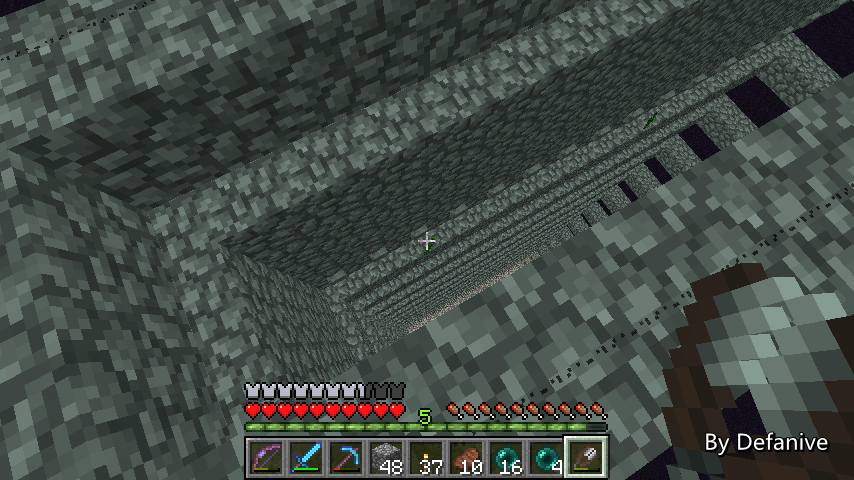
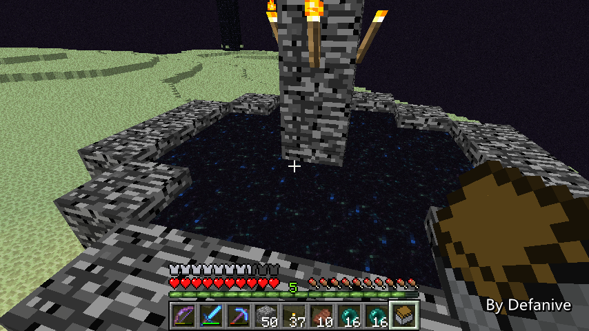
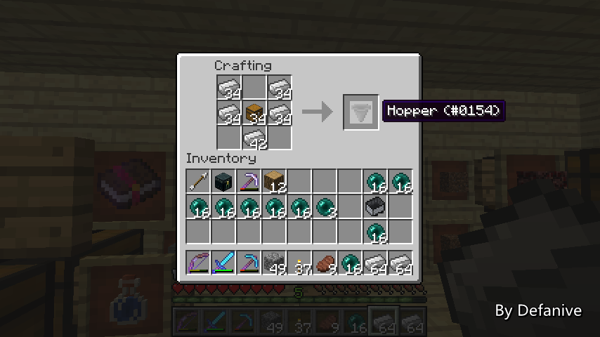
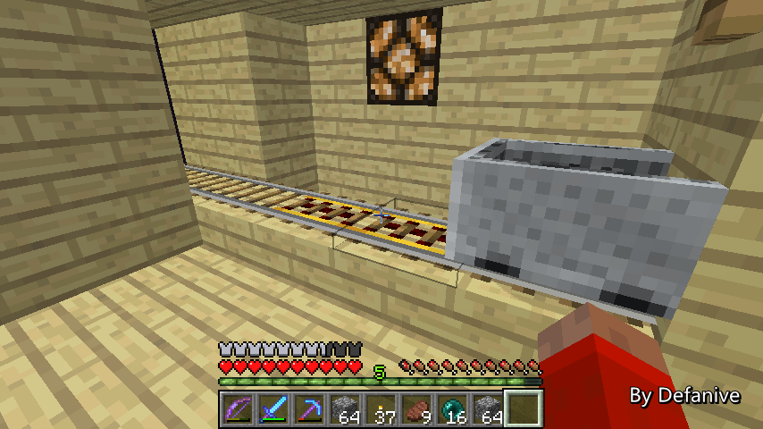

首页
上一页
267
268
269
270
271
272
272
273
274
275
276
277
下一页
末页
defanive2
无尽黑夜
14
大概就是这样了，简单跟大家说说最近这个世界的动态而已
非直播，最近很忙仍然没有时间玩MC，周末估计会有时间
1.7的预览版越来越赞了，十分期待！
22597楼
2013-09-20 12:14
defanive2
无尽黑夜
14
重新设计了一次TNT大炮，最终版实现了1200发/分钟
一秒中有20个game tick，因此理论最高速是60*20=1200发/分钟
对于这个成果很满意
http://tieba.baidu.com/p/2606854096
22633楼
2013-09-21 11:44
defanive2
无尽黑夜
14
终于又到周末了，来打会MC吧！
这周真的是非常的忙碌，不过总算是撑过去了
顺便祝大家中秋快乐！（好像有点迟了。。）
——来自 MCLive
22634楼
2013-09-21 11:52
defanive2
无尽黑夜
14
之前说到前几个星期的时候在地狱刷了3个凋零骷髅头
为什么呢，因为U2B上出了一个很屌炸天的视频
U2B/watch?v=8dHkHfWJ1T8
视频里面演示了一种允许在普通/困难模式下困住凋零的办法
——来自 MCLive
22635楼
2013-09-21 12:06
defanive2
无尽黑夜
14
当时看到视频后的第一个反应就是：
全自动刷黑曜石
同样的方法把凋零困在END的出生点
然后强制加载遗迹的chunk
在里面设置一个电路不断往传送门扔东西
然后让凋零破坏黑曜石即可
——来自 MCLive
22637楼
2013-09-21 12:09
defanive2
无尽黑夜
14
想刷黑曜石的原因有几个
首先肯定是储备已经没了，可见箱子里只剩一个黑曜石了
其次是1.7更新之后地狱门可以变大，进而造出更快的猪人塔
而造猪人塔对黑曜石的消耗大家也明白的
所以说当时看到视频之后第一个反应就是：
刷！凋！零！骷！髅！头！
——来自 MCLive
22640楼
2013-09-21 12:11
defanive2
无尽黑夜
14
之前完成了和平模式之后没有立即开始改造END
就是因为用凋零如果失控的话造成的破坏肯定很难修复
所以说在改造END工程之前要先完成这个刷黑曜石的工程！
——来自 MCLive
22641楼
2013-09-21 12:18
defanive2
无尽黑夜
14
虽然说刷黑曜石这个想法很早就有了
但是一直没有时间实施
panda4994最近在他的生存世界里面已经完成了
我们的大体原理都是一样的
但是细节上和我的计划有挺大的区别
——来自 MCLive
22642楼
2013-09-21 12:20
defanive2
无尽黑夜
14
凋零需要受到一次伤害才会破坏3x3x4范围内的方块
而要造成这个伤害，panda使用了雪球
雪球是一个非常不错的方法，因为雪球可以按住鼠标自动刷
他的设计是，遗迹中向END发射雪球物品
物品到END之后会让黑曜石平台重新刷新
同时雪球被回收，然后用于射凋零，进而破坏黑曜石平台
——来自 MCLive
22643楼
2013-09-21 12:23
defanive2
无尽黑夜
14
但是留意到他刷雪的消耗同样是很高的
用铁铲基本上1分钟废4-5把铁铲，也就是4-5块铁
虽然说铁储量很足，但是这样的浪费个人觉得还是很不值的
于是我打算用另外一种路线
任何物品都可以用于重新生成黑曜石平台
小黑眼肯定是个很不错的选择
对小黑塔进行简单的改造就可以全自动待机刷了
同时除了建造成本之外，没有任何使用成本
非常适合大批量挂机获得物品
——来自 MCLive
22645楼
2013-09-21 12:26
defanive2
无尽黑夜
14
既然要全自动的话，小黑就得要直接摔死
之前把蔓藤的高度加高到了3格
现在我们把蔓藤全部移除的话
即使我们下面再有3格的电路等东西
小黑仍然会立即摔死
因此我们先从移除蔓藤开始入手吧
——来自 MCLive
22649楼
2013-09-21 12:29
defanive2
无尽黑夜
14
剪刀收集蔓藤ing
——来自 MCLive
22650楼
2013-09-21 12:33
defanive2
无尽黑夜
14
刚清理完，不少都掉到台阶上了
慢慢收集
PS 现在的话END的和平模式非常好用
——来自 MCLive

22651楼
2013-09-21 12:39
defanive2
无尽黑夜
14
一堆的蔓藤 = =
——来自 MCLive
22652楼
2013-09-21 12:40
defanive2
无尽黑夜
14
本应可以回收17x2x3=102个蔓藤的
现在只回收率68个
收集速度不够快，有些despawn了
不过并不是什么很难采集的资源
去一趟沼泽地就好了
——来自 MCLive
22653楼
2013-09-21 12:44
defanive2
无尽黑夜
14
速度虽然没有铲雪快
但是0使用成本更加有意义
接下来需要回家一次，带一些漏斗来做自动化
——来自 MCLive
22656楼
2013-09-21 12:49
defanive2
无尽黑夜
14
发现了一个很蛋疼的事情
小黑居然瞬移到了这里 = =
——来自 MCLive
22657楼
2013-09-21 12:52
defanive2
无尽黑夜
14
接下来做箱子矿车一个
如果没记错的话，1.6更新后END传送门会把物品传到spawn point了
我们来测试一下
——来自 MCLive

22659楼
2013-09-21 12:54
defanive2
无尽黑夜
14
矿车被成功传送走了
——来自 MCLive
22660楼
2013-09-21 12:56
defanive2
无尽黑夜
14
可以看到箱子成功传送到了出生点了
陪伴这个箱子的还有我的11只狗 = =
PS 自从动物塔工程以后
我的狗都留在spawn chunks里面了
为了防止在spawn chunks周围刷动物
——来自 MCLive
22663楼
2013-09-21 13:00
defanive2
无尽黑夜
14
既然要自动收集，漏斗自然是必备的
面积为17x2，因此造34个漏斗
PS 个人感觉有必要造68个漏斗进行提高传输速度
不过先试一下看看怎么样再说吧
——来自 MCLive

22665楼
2013-09-21 13:03
defanive2
无尽黑夜
14
同时还要带上一堆铁轨用料
——来自 MCLive
22666楼
2013-09-21 13:05
defanive2
无尽黑夜
14
现在的计划是，利用漏斗收集小黑眼并传送到箱子矿车里
箱子矿车顺着铁路一直跑到END传送门
传送到主世界
现在先对铁路进行一些改造
——来自 MCLive

22670楼
2013-09-21 13:10
defanive2
无尽黑夜
14
把铁路改造成直达END传送门
——来自 MCLive
22672楼
2013-09-21 13:15
defanive2
无尽黑夜
14
在这里全部铺上漏斗，并且全部指向箱子矿车
——来自 MCLive
22673楼
2013-09-21 13:18
defanive2
无尽黑夜
14
接下来需要造一条向上爬的铁轨
让箱子矿车的铁路一直接轨到来回小黑塔的铁路
——来自 MCLive
22674楼
2013-09-21 13:19
defanive2
无尽黑夜
14
铁路已经铺好了，接下来只差照明系统
——来自 MCLive
22676楼
2013-09-21 13:26
defanive2
无尽黑夜
14
整个系统已经完成了！
当箱子矿车满了之后，拉下拉杆就可以把矿车进入铁路
进而送到主世界
——来自 MCLive
22677楼
2013-09-21 13:28
defanive2
无尽黑夜
14
接下来我们退出重进一次游戏，关闭伪和平
测试一下效果吧
——来自 MCLive
22678楼
2013-09-21 13:29
defanive2
无尽黑夜
14
效果非常不错，小黑眼都被漏斗收集了起来
——来自 MCLive
22679楼
2013-09-21 13:30
首页
上一页
267
268
269
270
271
272
272
273
274
275
276
277
下一页
末页